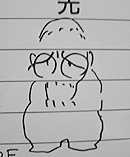
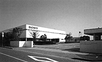

98.6.1（月）
・朝から東小金井村塾2の応募書類が段ボール山積みで送られてくる。制作部の人間が手分けして仕分けをするが、なかなか終わりそうにない。しかも作業をしている後ろでは、相変わらず問い合わせの電話が鳴り続いている。
・3時半からバーにて、動画説明会が行われる。まずは高畑監督から作品の意図や、表現方法についての話が、その後動画チェックの斎藤氏より、注意事項の解説が行われる。
・社員旅行委員会が行われる。
98.6.2（火）
・今日も村塾の応募が100通以上来ている。朝ジブリに来た宮崎監督もさすがに山となった書類を見てゲンナリ。昨夜も11時すぎまで応募書類と格闘していたそうな。
・金魚鉢で打ち合わせをしている鈴木プロデューサーを見て「鈴木さんはますます疲れてきたな。」とつぶやく宮崎監督。ホワイトボードには、眉間にしわを寄せた鈴木プロデューサーの絵が。

・日曜日に駐輪場に停めてある自転車が盗難にあった為、夜と休日は駐輪場にも鍵をかけることにする。
・絵コンテ、シーン5-9 14CUT分133.5秒分アップ。
98.6.3（水）
・安藤氏の打ち合わせが行われる。シーン5-9の14CUT。
・今作品から新しく原画を描くことになった倉田さんの打ち合わせが、コンテが上がらず伸び伸びになっていたが、約1週間という期限をつけて、田辺さんにコンテを描いてもらい、来週中旬には作打ちをすることに。
98.6.4（木）
・大谷さんの作打ちが行われる。シーン8-1。
・今回の作品では、一つのCUTで実線動画、内線動画、輪郭動画の3種類の動画を描かなければならないのだが、頭では把握していたつもりでも、実際に動画が上がって来ると、いろいろな場面で「これはいったい？」という疑問が出てきている。細かい打ち合わせを重ね、慣れていってくれれば問題も減っていくと思うのだが。
・東小金井村塾の応募がすでに500通を超えている。
98.6.5（金）
・デスク神村氏が二度目のCUT表の書き直し。一度目は、シナリオ完成時にシーン番号を通し番号に書き換えたため。そして今回は、表に通常の実線動画の欄の他に、内線動画、輪郭動画の欄を加えたため。「もう一度位はあるのでは」と神村氏。
・テストの意味も含め、シーン5-3の仕上げIN。
98.6.6（土）
・いつもは夏休み明けに募集をかけ、年末に試験をしていたジブリ研修生募集を、今年は夏前に募集し、いつもより二月程早く試験を実施することにほほ決定する。新人が入ってまだ二月しかたっていないのにもう来年の新人募集のことを考えるってのも実感が湧かず。
98.6.8（月）
・11時より、新人研修の一環として、鈴木プロデューサーの講演が行われる。ひとしきり話が終わった後に、鈴木さんが若者達に「子供の頃にどんなアニメを見ていた？」と質問をしたのだが、鈴木さんが知っている古いアニメはほとんど見ていないことが発覚、「時代は変わった」と衝撃を受けていた。
・近藤喜文さんの本をジブリで作ることになり、壁に近藤さんのグッズ（原画、修正、いたずら描きまで）募集のポスターが貼られる。
98.6.9（火）
・スタッフ一同待ちに待った高性能プロジェクターが搬入される。ビデオはもとよりコンピューター、ディスクレコーダーからも直接映写でき、さらに100メートル離れた所からも映写可能という強力ランプを搭載したすぐれ物だ。ちなみに設置する台は百瀬さんの設計。これで待望の大画面でのラッシュができる。
・昨日○○さんが来社し、田辺さん高橋さん等と話し合い。８月から原画として社内にIN。
98.6.10（水）
・お弁当付き社員旅行委員会が行われる。今日の議題は、オプショナルツアーの参加申込状況の確認と部屋割り。
・絵コンテ シーン13－1 5CUT 13秒分アップ。
98.6.11（木）
・イマジカでテストラッシュが行われるが、直接イマジカに行く予定だった高畑監督が、間違って会社に来てしまうハプニング。しょうがないのでイマジカに集まったメンバーだけで一度ラッシュを見た後、会社にフィルムを持ち帰り高畑監督を含めてもう一度ラッシュを行う。今回は、前回のテスト時に問題となった色の出方が焦点になったが、ほとんど問題がないほどうまくいっていた。スタッフ一同一安心。
・職場委員会が行われる。
・倉田さんシーン13-1 の打ち合わせ。
・○○アニメーション班がQARで自分たちの描いた原画を見ている。作品の趣旨とは違う気がするものの、なぜか動きがとても面白く、個性的なCUTが多い。
98.6.12（金）
・朝9時より野球部の練習あり。ところが深夜TV放送しているW杯の影響か、メンバーが4人（中心人物デスク神村氏までが自宅で爆睡）しか集まらず、広い小金井球場で地獄のような練習となる。20日には試合まで予定されているというのに…。
・声の打ち合わせが行われる。
・チェコでの「交響組曲もののけ姫」のレコーディングから帰ったI氏からその様子を聞く。オーケストラはチェコフィル、録音会場となったのは、本拠地プラハのルドルフィナム、ドボルザークホールというなんとも羨ましい設定。「弦は美しいし、何と言っても日本とは金管が…」というI氏にオタクな私は嫉妬の眼差し。近いうちに、I氏によるチェコ日誌を掲載する予定なので乞う、ご期待。
98.6.13（土）
・二人分の作打ちが行われる。担当シーンは9-4、と9-3。
・バージョン8まできて、ようやく本領を発揮しだしているマック版急速演技記録計(仮名)だが、それでもまだ操作性その他の面についてQARには及ばない。専用機かそうでないかの違いはあるが、QARは偉大な機械だったのだ。
・動画の○さん来社、2時間ほど説明を聞く。特殊な動画作業に慣れるまで社内に入って作業することに。
・原画の○○さんが来社。シナリオ等資料を渡す。
・宮崎監督来社。来年カレンダーの原画を描く。
98.6.15（月）
・百瀬さんからボブスレー編サイズの動画用紙の一寸短いものを作って欲しいとの依頼あり。今回は様々なサイズ、紙質の動画用紙が入り乱れている。
・以前四国に行ったときに撮った、社員旅行のバスツアーコースに入っている大豊町日本一の大杉の写真（木が大きすぎて、28ミリレンズでも3枚に分けないと撮影出来なかった）を、パンフレット用にマックに取り込み、1枚に合成しプリントアウト。
・昨日が村塾応募の締切日だったのだが、またかなりの数の応募書類が来ている。最終的には800通近くに。
98.6.16（火）
・マック版急速演技記録計(仮名)を一番熟知している制作斎藤氏が、今まで出来ないとされていたCUTをつないで見る方法を発見。曰く「適当にいじっていたらつながってしまったんです」。うーんコンピュータの奥は深い。
・現在マッドハウスにいる高坂氏から動画チェック斎藤氏経由で「ツール・ド・信州」の参加申し込み書が来る。今年は、マッド、AIC、IG等各社が出そろう大会になる模様。優勝は高坂氏かAICの面々が有力との情報。
98.6.17（水）
・現在QARは、制作の斉藤君らがその日に録ったものを夜にMOへ保存するシステムをとっているが、そうとは知らない某動画スタッフが思わず電源をカット。よりによって複雑な付けパンカットを入れたばかりだった斉藤君は目が点になっていた。
・デスク神村氏が、ここ二週間の動画上りの表をチェックし、斎藤氏に見せる。思ったよりずいぶん少ない数字に斎藤氏も首をかしげる。「まだ慣れていないからかもしれない」ということでもう二週間後に再度数字を見ることに。
98.6.18（木）
・日本テレビで7月5日に放送される予定の「もののけ姫」総決算特番の収録が行われる。
・デジタル編集機アビッドの研修が始める。岡安プロモーションの小島さんが先生を務め、瀬山編集の面々や、社内の担当となった撮影部の古城氏らがこれから毎週使い方を教えてもらうことに。
・制作川端氏が、現在「もののけ姫」のビデオを急ピッチで生産しているSonyPCLの工場へ見学に行く。この工場では1日約3～4万本の「もののけ姫」ビデオが作られるという。広い工場内をビデオが次々と機械で送られていく様はまさに壮観だとか。ほとんどを機械に任せても、テープをケースに入れるなど手作業で行わなければいけない部分もあるらしい。こうして出来上がったビデオは、続々と全国の発売元に送られている。

98.6.19（金）
・東小金井村塾2の1次締め切り分の面接が行われる。面接官は宮崎監督、鈴木プロデューサー、篠原さんの三人。書類選考を通過した、4人、6人が組みとなった集団面接で行われる。
98.6.20（土）
・多摩川沿いの府中健康センターにて、奥井撮影監督が何時もお世話になっている東京エレクトロンと野球の試合が行われる。結果はまるで大人と子供の試合のようで、公称2対1（本当は20点以上取られ、こちらはヒットを1本も打てず）で敗戦。
・東小金井村塾2の面接二日目が行われ、面接合格者が数名決定する。
98.6.22（月）
・6月26日発売予定の「もののけ姫」のビデオを、関係各社に送るため、制作業務は袋詰めにおおわらわ。
・デスク神村氏が今までのジブリ作品の原画実績表と、「となりの山田くん」君の原画実績を見比べながら頭を抱えている。近日中に面談を予定。
・ツール・ド・信州の各スタジオ参加者のリストが送られてくる。みんな実に速そうに見えるのは、気のせいか。ところで最年長のマッドから参加するり○たろう氏を筆頭にどうも年齢層が高めである。20代が数える程しかいない。サッカー界もそうらしいけど、若者のスポーツ離れは深刻か。
98.6.23（火）
・今年は、時期を早くしたりと、新人募集に力を入れているジブリだが、総務部でも全国の美大を廻ったりと本腰を入れて活動を開始している（一般の会社に較べると遅いのだろうけど…）。因みに今年は新人の他に中途採用のアニメーターを募集することになっている。
・今年のツール・ド・フランスはスカイパーフェクTVで全ステージを放送するのことになったのだが、誰もCSに入っている人がいないため、みんな「早くパーフェクＴＶに入りなよ」と他人を必死に勧誘している。因みに某○ジテレビでは三日間しか放送しないらしく、ツール友の会のメンバーは怒り狂っている。
98.6.24（水）
・作監上がりが早くも動画に追いつかれつつある。小西氏の作業が終わったものは、すぐに高畑監督のチェックを経て、動画へ。
・明日のプレスコ作業に向けて、マック版急速演技記録計(仮名)に入っていたデータを、アビットに移しCUT番号順に編集。あっと言う間に完成する。速い。これでライカリールも出来るぞ。
・美術の某氏は、先日「これからはモバイルだ」とモバイルギアを買っていたが、もう飽きたのかデスク神村氏に早くも払い下げ。
98.6.25（木）
・7月に行われる記者発表の時に上映する映像を作らなければならないのだが、本編がまだ仕上作業に入っていないため、上映する部分を本編とは違う特殊な処理で仕上ることに。
・新しく出来た宮崎監督のシニアジブリ、通称豚屋にスカイパーフェクＴＶを入れようと画策するも失敗。
98.6.26（金）
・ある部分の朗読を担当する○○治師匠の録音が田町のMITで行われるる。最初は緊張していた感じの○○治師匠だったが、途中からはギャグでスタッフを笑わせながらの快調な録音となる。ところで今回もメイキングを担当するテレビマンユニオンの浦谷氏が早速取材に来ていた。
・「もののけ姫」「『もののけ姫』はこうして生まれた」のビデオが発売。それを記念して、川崎アゼリア、銀座山野楽器、新宿紀ノ国屋でキャンペーンが行われた。「もののけ姫」ビデオ発売キャンペーン・川端氏レポート
98.6.27（土）
・5時より、東京テレビセンターにて朝○雪○さんの録音が行われる。今回のメインは来月中旬にせまった記者発表用の声。次回は来月初旬に行われる予定。
98.6.30（火）
・絵コンテ、シーン7-5がアップ。
・近藤喜文さんの本を作るため、いろんな人が近藤さんの資料や絵を持ってきているが、デスク神村氏が秘蔵の「火垂るの墓」セルをわざわざ大阪の実家から持ってくる。あまりの懐かしさに涙するもの数名。しかしあれからもう10年も経ってしまったのね…。
| 次のページへ |
| 日誌索引へ戻る |
| 「もののけ姫」トップページへ戻る |